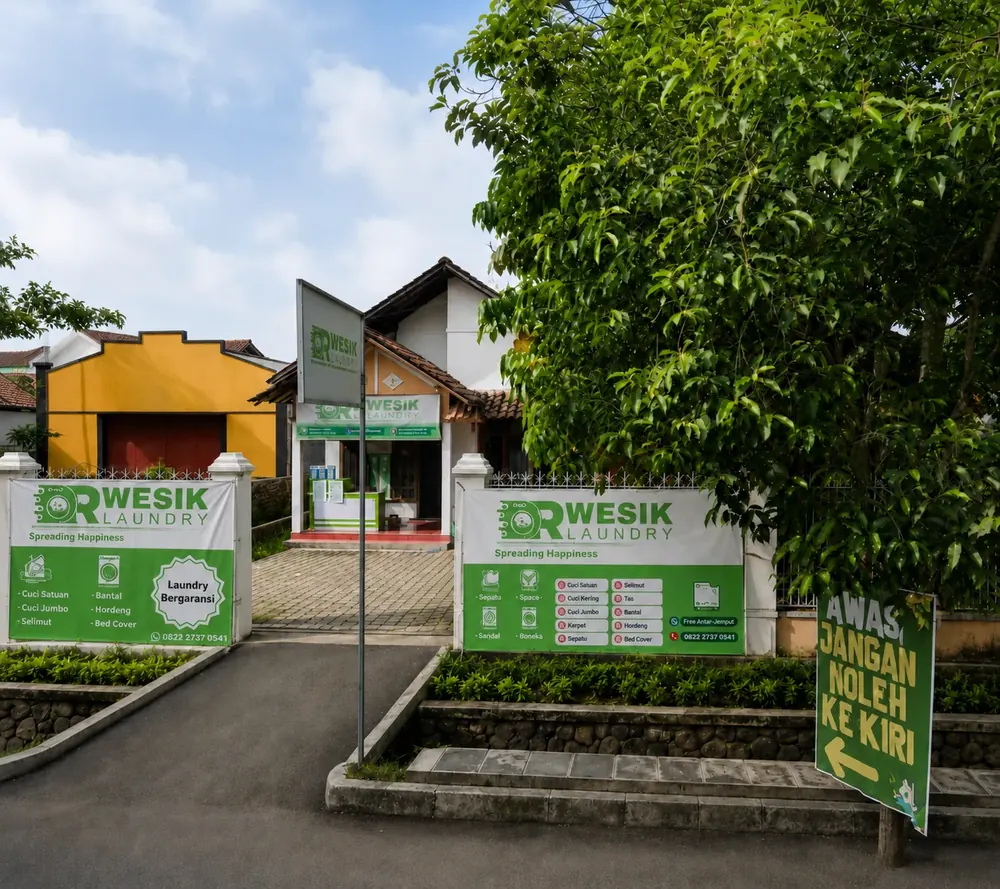
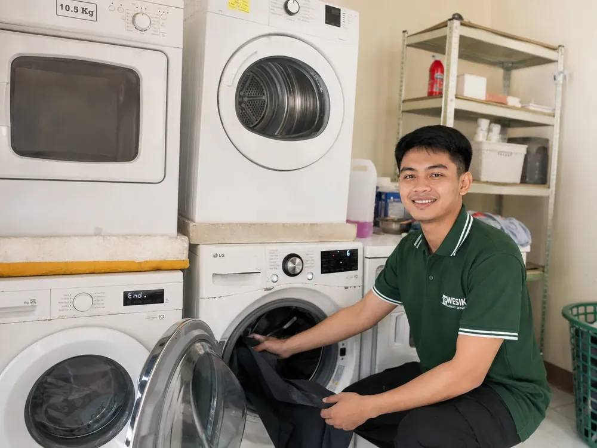
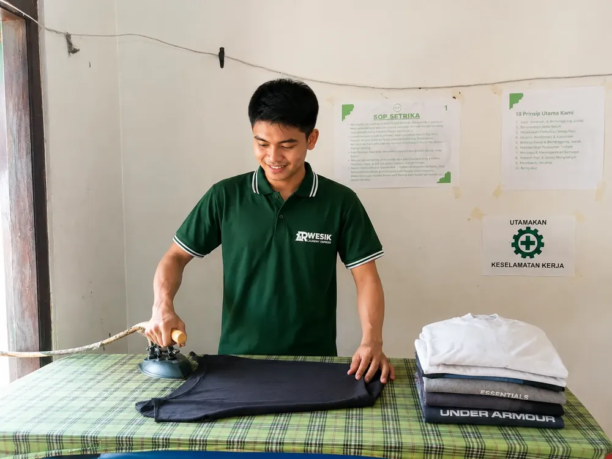
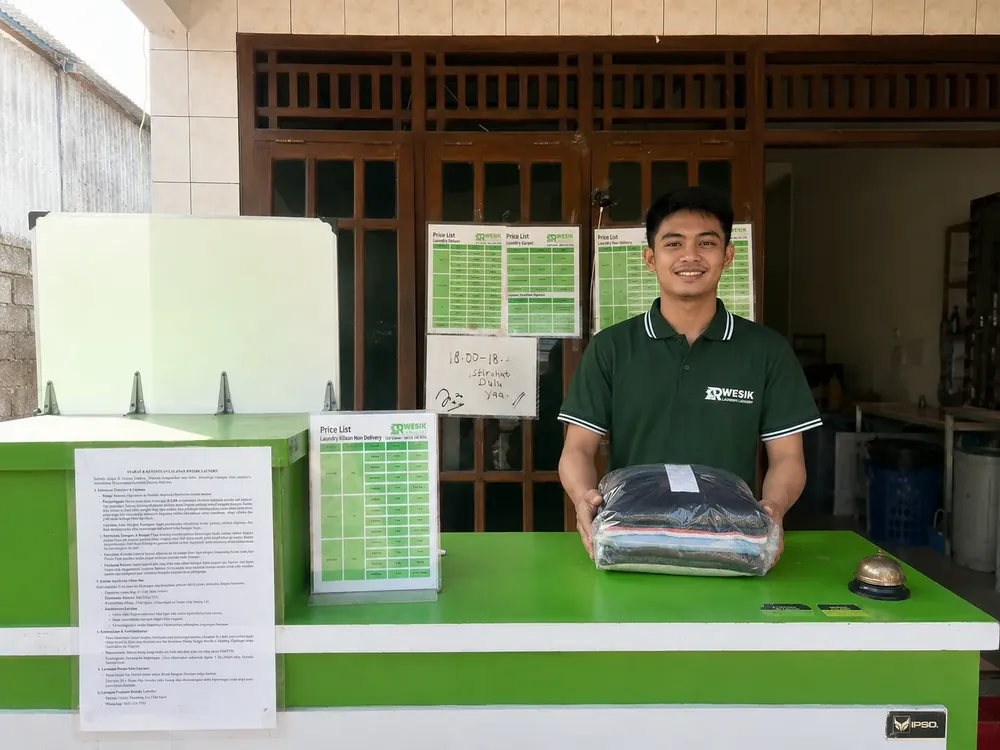
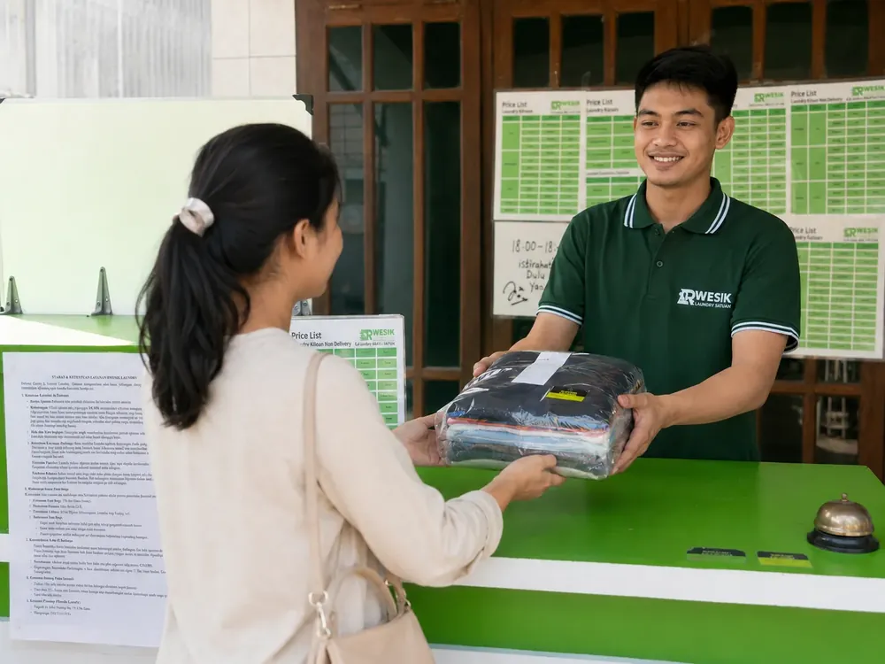

🛡️
Laundry Bergaransi
Ganti rugi untuk pakaian rusak atau hilang akibat proses kami, serta pengerjaan ulang atau uang kembali untuk hasil yang tidak bersih, tidak rapi, atau tidak wangi sesuai ketentuan.
Lihat ketentuan garansi →Rwesik Laundry melayani laundry kiloan, satuan, sepatu, bed cover, tas, koper, karpet, dan kebutuhan laundry lainnya. Proses dibuat lebih tertata agar customer lebih tenang saat menitipkan cucian.

Kami menjaga proses, komunikasi, dan tanggung jawab layanan agar customer tahu ke mana harus menghubungi kami jika ada kendala.
Ganti rugi untuk pakaian rusak atau hilang akibat proses kami, serta pengerjaan ulang atau uang kembali untuk hasil yang tidak bersih, tidak rapi, atau tidak wangi sesuai ketentuan.
Lihat ketentuan garansi →Cucian satu customer tidak dicampur dengan customer lain dalam satu mesin sehingga proses lebih terkontrol.
Laundry kiloan delivery minimal 5 kg. Gratis sampai 5 km; di atas 5 km dikenakan tambahan sekitar Rp10.000–Rp15.000 sesuai jarak.
Dari cucian harian sampai item khusus, pilih kategori layanan yang sesuai dengan kebutuhanmu.
Cuci + setrika, cuci lipat, dan setrika saja dengan pilihan 3 hari, 1 hari, 6 jam, atau 3 jam.
Jaket, kemeja, kaos, celana, jas, gorden, helm, stroller dan item lain yang dihitung per pcs.
Lihat harga satuan →Fast Clean, Deep Clean, Leather/Suede, Rewhitening, dan Unyellowing sesuai kondisi sepatu.
Detail cuci sepatu →Bed cover, sprei, selimut, bantal, guling, tikar dan matras.
Lihat harga →Pembersihan per item dengan harga berdasarkan jenis atau ukuran.
Lihat harga →Karpet berbagai ketebalan serta jas, kebaya, jaket dan item tertentu yang membutuhkan penanganan khusus.
Lihat harga →Harga per kilogram sama untuk outlet dan delivery. Perbedaannya ada pada minimal order.




Laundry kiloan delivery minimal 5 kg. Untuk jarak di atas 5 km ada tambahan sekitar Rp10.000–Rp15.000 sesuai lokasi.
Beberapa pengalaman customer setelah menggunakan layanan Rwesik Laundry.
“Laundry yang rekomen untuk para pendatang yang nyari laundry express di Pati, harganya ramah dikantong dan bener-bener tepat waktu, dan gokilnya bisa antar jemput ke hotel.”
Andika Bayu“Udah sering dikecewain laundry di Pati, ini nemu laundry yg pelayanannya bagus bgt di Pati. Terimakasih Rwesik Laundry Pati.”
Lek Prie_29“Hasilnya memuaskan kak dan bersih merata + wangi juga kak, pokoknya bagus.”
KapitIya, Rwesik Laundry buka setiap hari pukul 08.00 sampai 20.00.
Tidak. Rwesik menerapkan satu mesin satu customer.
Ada. Laundry kiloan delivery minimal 5 kg. Gratis sampai 5 km; di atas 5 km ada tambahan sesuai jarak.
Ada. Ketentuan lengkap tersedia di halaman Garansi.
Bisa. Tersedia Fast Clean, Deep Clean, Leather/Suede, Rewhitening, dan Unyellowing.
Ada pilihan 1 hari, Express 6 jam, dan Super Express 3 jam.